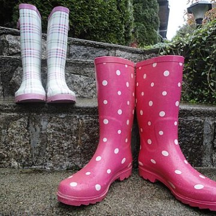

🔐 2번 방 · 5차시 미션 4
🔐 2번 방 · 5차시 미션 4
탐정 관찰 기록지

요원 번호 :
요원 이름 :
1물건을 크게 그리고, 가장 자세히 본 부분을 돋보기에 그려요.
🖍️ 내가 관찰한 물건

물건 이름 : 장화
🔍 가장 자세히
본 부분
본 부분
(하얀 물방울무늬)
2여러 감각으로 관찰한 것을 써요.
| 👀 눈으로색 · 모양 · 크기 | 분홍색에 하얀 물방울무늬가 있어요. 길쭉해서 무릎 아래까지 와요. |
| ✋ 손으로느낌 · 무게 | 매끈매끈하고 말랑말랑해요. 생각보다 가벼워요. |
| 👂 귀로흔들고 두드리면 | 바닥을 톡톡 두드리면 통통 소리가 나요. |
| 👃 코로살랑살랑 부채질 | 고무 냄새가 나요. |
3특별한 점을 찾고, 수수께끼를 만들어요.
이 물건은물이 스며들지 않는 고무로 만든 것이(가) 특별해요.
🕵️ 나는말랑말랑하고 매끈매끈해요.
나는비 오는 날 물웅덩이에서 신어야해요. 나는 누구일까요?
여러 감각으로 물건을 관찰했어요.☆☆☆
물건의 특별한 점을 찾았어요.☆☆☆
관찰 단서로 수수께끼를 만들었어요.☆☆☆
💡 관찰 낱말 주머니
매끈매끈 · 울퉁불퉁 · 딱딱해요
말랑말랑 · 반짝반짝 · 길쭉해요
째깍째깍 · 바스락 · 딸깍
매끈매끈 · 울퉁불퉁 · 딱딱해요
말랑말랑 · 반짝반짝 · 길쭉해요
째깍째깍 · 바스락 · 딸깍
물건 교과서 · 물건을 자세히 탐구하기🗝️ 2번 방 열쇠 조각